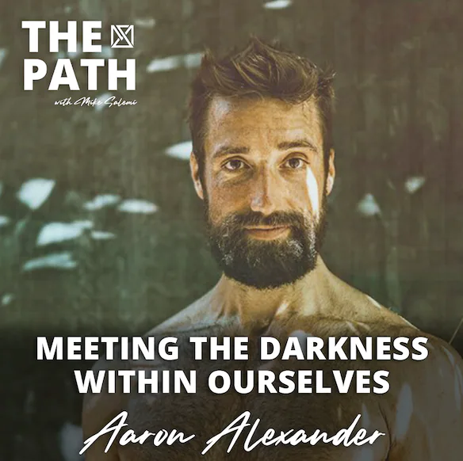

B882 · Meeting the Darkness within Ourselves
Hi {first_name},
Aaron Alexander is an author, and host of the popular Align Podcast. He utilizes movement as a means to better people’s minds and bodies. This conversation is a special one because Aaron is joining us after spending approximately 5 days in complete darkness. In this episode, he brings his reflection on what it was like to be alone with his thoughts. We also talk about the inner critic, self-compassion, and how we can love ourselves while simultaneously striving to be better.
Today, on Episode #24 of The Path Podcast, we discuss:
 Click here to listen on Apple.
Click here to listen on Spotify. Yours in Health, Mike
P.S. If you desire clarity, confidence & alignment in your coaching practice, you’ll need a framework that is predictable, repeatable, and potent no matter the client's situation, without being cookie-cutter. In the Illuminate Coaching Program with Jator Pierre, you’ll get “time under tension” through peer-to-peer coaching and practical sessions that will offer you the experience of this new style of coaching. Learning in this way encodes the information at a whole different level than lecture-style programs.
To learn more about the Illuminate 5-month immersive coach training program, click here. The cart opens Feb 8th, and closes Feb 19th at midnight.
|